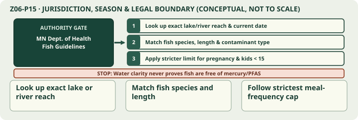

Z06-P15 · Hunting and fishing · New manuscript
Checking Minnesota Department of Health Waterbody Fish Advisories
Verify current MDH species-, size-, and waterbody-specific consumption guidelines before eating any wild-caught freshwater fish.
When it applies · All Minnesota lakes, rivers, and Lake Superior angling.
Equipment · Current MDH waterbody fish-consumption lookup record and check date.

Actions
- Check the Minnesota Department of Health (MDH) waterbody-specific fish consumption lookup for the exact lake or river stretch, species, and fish length before eating caught fish.[H04]
- Understand that visually healthy fish from clear pristine-looking northern lakes can still carry elevated mercury, while urban or industrial waters may add PFAS or PCB restrictions.[H04]
- Apply statewide safe-eating guidelines when a waterbody is untested rather than assuming an unlisted lake is contaminant-free.[H04, H05]
Failure recognition · Judging fish safety by water clarity or healthy appearance ignores invisible mercury, PFAS, and PCB contamination.[H04]
Verify · Exact waterbody name, species, size bracket, check date, and MDH meal-frequency limit are verified prior to consumption.[H04]
Stop or change course · Stop and do not eat any fish from a waterbody carrying a Do Not Eat advisory or unknown chemical spill warning.[H04]
Evidence and editorial notes
- H04 · Minnesota Dept. of Health · Fish Consumption Guidance and Waterbody Advisories (Current web edition)
- Section: Waterbody-specific fish consumption advisories (mercury, PFAS, PCBs) · Conditions: Consuming Minnesota caught freshwater fish
Support: MDH issues species-, size-, and waterbody-specific meal-frequency limits for mercury, PCBs, and PFAS, with stricter limits for pregnant/nursing people and children under 15.
Limitations: Visual fish health and water clarity cannot detect mercury, PFAS, or PCBs; check current MDH waterbody lookup before eating caught fish. · Conflicting evidence: None noted.
Editorial note: Mandatory Z06 public-health fish advisory gate. · Specialist reviewer: Public-health toxicologist and MDH reviewer
Primary source · checked 2026-11-25 - H05 · Minnesota Dept. of Health · Fish Consumption Guidance Program Overview (Current web edition)
- Section: Trimming fat and skin limits for organic contaminants vs mercury · Conditions: Cleaning and preparing advisory-screened freshwater fish
Support: Trimming belly/dorsal fat and removing skin can reduce fat-soluble PCBs, but mercury binds in muscle tissue and cannot be trimmed or cooked out.
Limitations: Cleaning methods never replace checking waterbody-specific advisories or respecting do-not-eat notices. · Conflicting evidence: None noted.
Editorial note: Distinguishes PCB trimming from mercury persistence. · Specialist reviewer: Environmental health specialist
Primary source · checked 2026-11-25
Current assessment · A04-H05 (2026-11-25) · Bounded support confirmed from an alternate source (A04): Removing fatty tissue can reduce PCBs. It cannot remove mercury or PFOS. Waterbody, species and population advice remains controlling. Limits: Specialist review PENDING (Environmental health specialist); publication HOLD. All release decisions pending.
Source lineage · New manuscript (Z06 P17 fish advisories) · Classification · New manuscript.